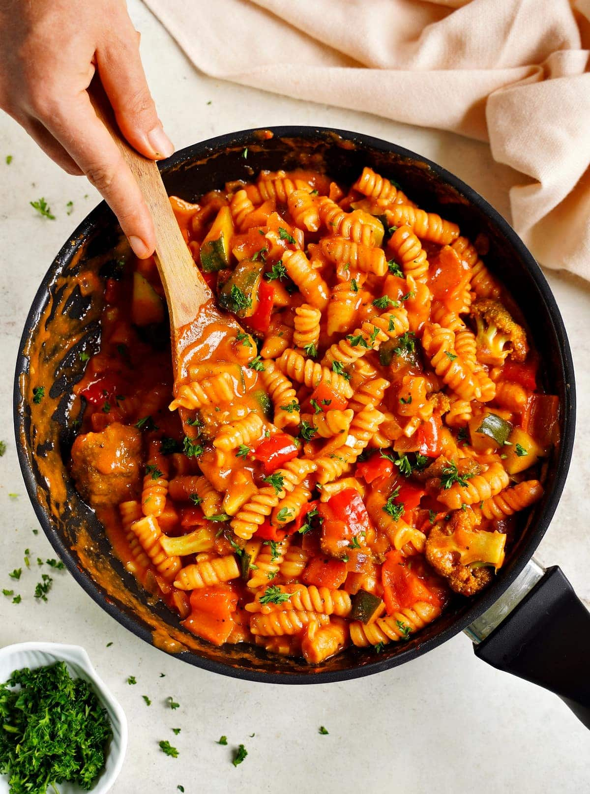

One-Pot-Pasta

Zutaten
- 600g Hähnchenbrustfilets
- 2 rote Paprika
- 1 Zwiebel
- 3 Knoblauchzehen
- 200g Zuckerschoten
- 1 Zucchino
- 3 EL Öl
- 4 TL rote Currypaste
- 150 ml Weißwein
- 500 g Fusilli
- 600g Kokosmilch
- 800g stückige Tomaten (aus der Dose)
- 4 EL Sojasauce
- 100 ml Hühnerbrühe (nach Belieben)
Schritte
- Die Hähnchenbrustfilets kalt abspülen, mit Küchenpapier trocken tupfen und in mundgerechte Würfel schneiden.
Die Paprika waschen, halbieren, von Kernen und weißen Trennwänden befreien und ebenfalls in mundgerechte Würfel schneiden.
Zwiebel und Knoblauch schälen und klein würfeln.
Zuckerschoten und Zucchino putzen und waschen. Zucchino längs halbieren und quer in dünne Scheiben schneiden.
Die Zuckerschoten in Streifen schneiden.
- Das Öl in einem großen Topf erhitzen. Zwiebelwürfel und Knoblauch darin bei mittlerer Hitze kurz anschwitzen,
Hähnchenwürfel und das vorbereitete Gemüse dazugeben und anbraten.
3 TL rote Currypaste dazugeben und mitanbraten.
- Den Topfinhalt mit Weißwein ablöschen und die Fusilli, die Kokosmilch und die stückigen Tomaten dazugeben.
Die One-Pot-Pasta mit 2 EL Sojasauce würzen.
- Pasta unter ständigem Rühren bei mittlerer Hitze kochen, bis die Nudeln gar sind.
Darauf aufpassen, dass nichts anbrennt. Ist das Gericht nach der Garzeit nicht saftig genug, noch etwas Hühnerbrühe hinzugeben.
- Die Pasta noch mal mit Currypaste und Sojasauce abschmecken, auf sechs Tellern anrichten und servieren.